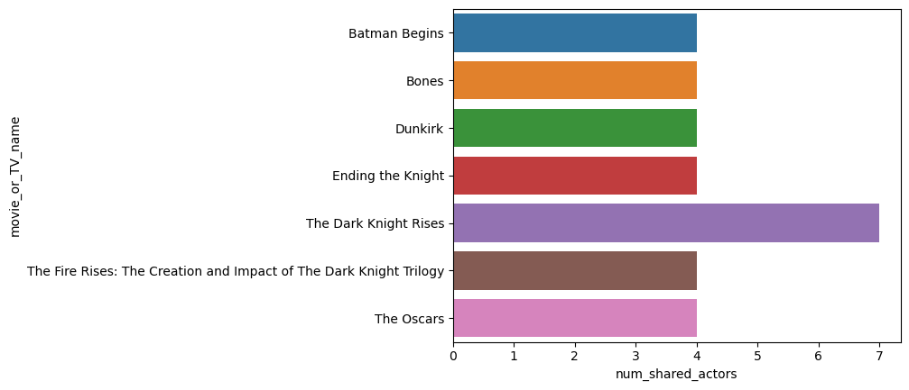

import pandas as pd
import seaborn as snsIntroduction
Let’s practice web scraping. We’re going to scrape information from the credits page of my favorite movie, Inception, from its page on the movie database website. Here’s a link to my project repository: https://github.com/Nkannan12/TMDB-scraper-scrapy. To start your own project, run the following command in your terminal:
scrapy startproject TMDB_scraperThis will create a directory with a bunch of files, but the only ones you really need to worry about are settings.py and a new one I’m asking you to create now insdie the spiders subdirectory: tmdb_spider.py. This is our actual spider, and it’s where we’re going to do pretty much all of our work. Copy the following code into that file to start off the process:
import scrapy
class TmdbSpider(scrapy.Spider):
name = 'tmdb_spider'
def __init__(self, subdir=None, *args, **kwargs):
self.start_urls = [f"https://www.themoviedb.org/movie/{subdir}/"]This begins the definition of the TMDBSpider class, and creates a constructor that will allow us to enter a subdirectory into the terminal to scrape any movie’s page on TMDB!
Parsing Method #1
We define parsing methods to help the spider figure out what exactly to scrape. The first one we are going to look out is called parse(self, response). This method assumes we start out at the front page of a movie on TMDB. It is defined as follows:
def parse(self, response):
"""Yields a scrapy.Request to the full credits url, parsed using the parse_full_credits function.
Args:
response: Page to be parsed
"""
full_credits_url = f"{self.start_urls[0]}cast" #gets the url of the cast page
yield scrapy.Request(full_credits_url, callback=self.parse_full_credits)This allows us to navigate to the full cast page of the movie. First, we find the actual url of the page. To do this we use the instance variable start_urls, which is a list, so we take its 0-index element (since there’s only one element in the list, the url itself). Then, we use the fact that every cast page on TMDB is the original movie url followed by /cast. Using python f-strings, we can write the full_credits_url. This is then yielded by a scrapy.Request, with the callback being our next parsing function, which is described in the next section.
Parsing Method #2
Our next parsing method is parse_full_credits(self, response). This method seeks to pick out all actors credited in the movie. It is defined by the following code:
def parse_full_credits(self, response):
"""Yields a scrapy.Request to each actor's url, parsing using the parse_actor_page method
Args:
response: page to be scraped
"""
credits = response.css('ol.people.credits')[0] #all the actors are contained in the first ol.people.credits
actor_links = credits.css('div.info a::attr(href)').getall() #gets the links to actor pages
for actor in actor_links:
actor_url = response.urljoin(actor) #gets the full actor url
yield scrapy.Request(actor_url, self.parse_actor_page)To write this, we must use the inspect element on the cast page to look for patterns in how the webpage is organized in html. You can do this by right-clicking on the page, going to developer tools, and clicking inspect. I noticed that the all credits are part of the ol.people.credits element. To get acting credits, we take the first element described. We use a css selector to do this, seen in the second line of code. We want to go further and retrieve the actual links to these actors’ pages. This is done in the second line, using inspect again to find a pattern. Links are contained in div.info a::attr(href). We want all links, so we use getall(). Finally, we use a for loop to get the full link for each actor, using urljoin(). For each actor, we yield a scrapy.Request with the actor’s url and the callback being our final parsing function, which is described in the next section.
Parsing Method #3 (This is the most important one!)
Our final parsing method is parse_actor_page(self, response), which scrapes all the acting credits a specific actor has ever gotten. It is defined by the following code:
def parse_actor_page(self, response):
"""Yields a dictionary with two key-value pairs for each movie the actor has an acting credit for
Args:
response: Page to be scraped
"""
actor_name = response.css('div.title a::text').get() #gets the actor name
acting_index = 0 #index of which table.card.credits to return from div.credits
jobs = response.css('div.credits_list h3::text').getall() #acting, writing, producing, etc.
for i in range(len(jobs)):
if jobs[i] == 'Acting':
acting_index = i
break
acting_cred = response.css('div.credits_list table.card.credits')[acting_index]
movie_or_TV_names = acting_cred.css('bdi::text').getall() #movie name
for movie_or_TV_name in movie_or_TV_names:
yield {
"actor" : actor_name,
"movie_or_TV_name" : movie_or_TV_name
}Again, we must use inspect. First we have to find the actor name. I noticed that this can be found in the div.title section. Using a::text allows us to get just the text that is the actor’s name (note in the previous method we used a::attr(href) to find the LINK). Next, we have to find the actor’s acting credits. To do this we must filter out all non-acting credits, like writing, prodcution, crew, etc. while gathering up everything else. To do this, we must scrape information from the corresponding header. These pages all have headers h3.zero, h3.one, h3.two and so on, that identify if a table of credits is for acting or not. These are all in the div.credits_list element, so I made a list of the headers. I can inspect the indices of this list to see which card correspond to which job (acting, writing, etc.), which is done by the for loop. Then, I can find acting credits using div.credits_list table.card.credits with the proper index for acting. Furthermore, we can find each movie name through bdi::text, since the names are in between bdi elemets. Finally, we yield a dictionary with two key-value pairs: the name of the actor, and the name of a movie, with one dictionary for each movie they are credited for.
Visualizing our Scraped Data in Practice
Now we can run the following terminal command to make a csv file from the data we scrape. Let’s look at the page for Inception:
scrapy crawl tmdb_spider -o movies.csv -a subdir=27205-inceptionThis outputs a csv called movies.csv, and we can create a pandas DataFrame from this. This will help us visualize the scraped data further. Let’s go ahead and do that.
The two things we’re going to need are pandas and seaborn to plot. We do this in the following code:
df = pd.read_csv("movies.csv")
movie_actor_counts = df.groupby('movie_or_TV_name')['actor'].nunique().reset_index()
movie_actor_counts.columns = ['movie_or_TV_name', 'num_shared_actors']
filtered_movies = movie_actor_counts[movie_actor_counts['num_shared_actors']>=4]
filtered_movies.drop(index=620, inplace=True)/tmp/ipykernel_35668/2527797669.py:5: SettingWithCopyWarning:
A value is trying to be set on a copy of a slice from a DataFrame
See the caveats in the documentation: https://pandas.pydata.org/pandas-docs/stable/user_guide/indexing.html#returning-a-view-versus-a-copy
filtered_movies.drop(index=620, inplace=True)Through this, we have created a DataFrame with two column: movie_or_TV_name and num_shared_actors. I utlized .groupby() to create a new DataFrame from df that had a column that records the number of actors in df that are in each specific movie. Then I filtered this so that we only consider movies with at least 4 of the actors involved. Finally, I dropped the row for Inception, since it is an outlier in the data. This results in the following DataFrame:
filtered_movies| movie_or_TV_name | num_shared_actors | |
|---|---|---|
| 160 | Batman Begins | 4 |
| 214 | Bones | 4 |
| 409 | Dunkirk | 4 |
| 430 | Ending the Knight | 4 |
| 1257 | The Dark Knight Rises | 7 |
| 1280 | The Fire Rises: The Creation and Impact of The... | 4 |
| 1393 | The Oscars | 4 |
We can further visualize this using a bargraph through seaborn, shown in the following code:
sns.barplot(data=filtered_movies, x='num_shared_actors', y='movie_or_TV_name')
These are the movies with a significant number of actors crossing over from Inception. As we can see, The Dark Knight Rises truly stands out. This makes sense since it is a Christopher Nolan movie, the same director as Inception. In fact many of these are Christopher Nolan movies. So if you like Inception, watch some other Nolan movies, such as the ones in the bar plot!